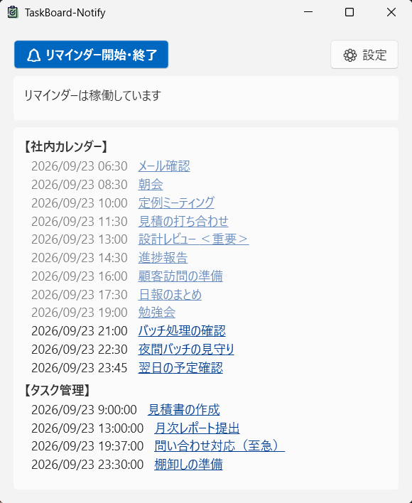
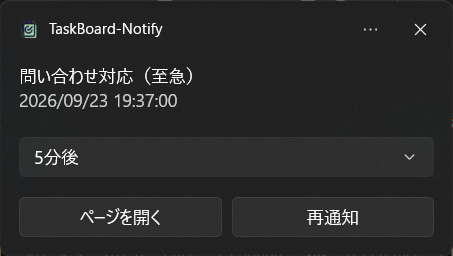
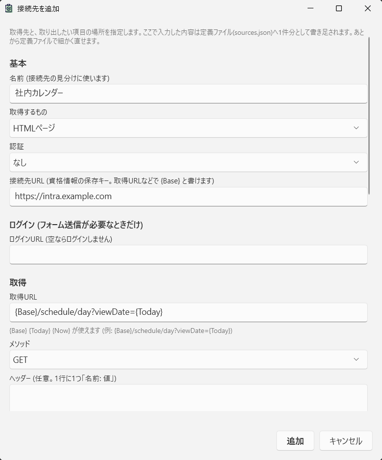
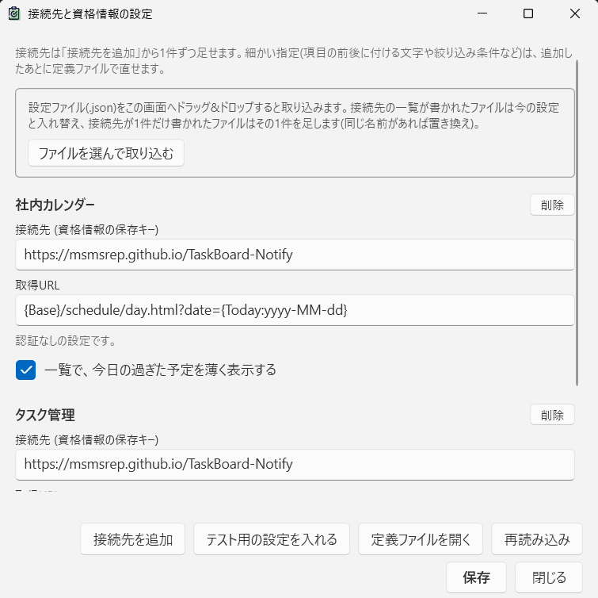

TaskBoard-Notify は、社内カレンダーやタスク管理サイトから予定・タスクを定期的に取り込み、 開始時刻の前に Windows のトースト通知で知らせる常駐アプリです。 取得先も読み方も設定で決められるので、いつものサイトをそのまま通知元にできます。
Windows 10 / 11 対応 ・ アカウント登録不要 ・ 開発者のサーバーへは何も送りません


ブラウザで予定表を開きっぱなしにしなくても、時間になれば Windows が教えてくれます。
何分前に知らせるかは接続先ごとに設定。通知から「再通知」で後回しにしたり、「ページを開く」で元のページへ飛べます。
HTML の表はCSSセレクタで、JSON の API はパス指定で読み取ります。専用対応を待たず、設定だけで新しい接続先を足せます。
接続先はいくつでも並べられます。メイン画面では接続先ごとに今日以降の項目を時刻順に表示し、期限切れも一目で分かります。
フォームログイン・ユーザー名とパスワード・APIキーに対応。パスワードと APIキーは Windows の DPAPI で暗号化して端末内に保存します。
起動するとタスクトレイに常駐し、あとは裏で取得と通知を続けます。
取得した項目を接続先ごとに日時順で並べます。タイトルはリンクになっていて、クリックすると元のページをブラウザで開けます。
開始の数分前に、タイトルと時刻を通知でお知らせします。手が離せないときは時間を選んで再通知、すぐ確認したいときは「ページを開く」で詳細ページへ。
取得するもの（HTML ページ / JSON）、認証方法、取得 URL、取り出したい項目の場所を入力するだけ。URL には {Today} や {Base} などの置き換え文字が使えるので、日付ごとに変わるページも追いかけられます。

接続先の定義は sources.json 1つにまとまっています。用意した設定ファイルを画面へドロップすれば取り込み完了。チームで同じ設定を配るのにも便利です。

まずはテスト用の接続先で動きを確かめてから、いつものサイトをつなげるのがおすすめです。
インストールして起動すると、タスクトレイに常駐します。ログオン時の自動起動にも対応しています。
「設定」→「テスト用の設定を入れる」で、このサイトのテストデータを読む接続先が2件足されます。認証は不要です。
「接続先を追加」から実際の予定表やタスク管理サイトを登録。試した接続先は「削除」で消せます。
通知のためのデータは、あなたの PC とあなたが指定した接続先の間だけでやり取りします。
ユーザー登録・利用状況の解析・ログの自動送信は一切行いません。通信先は利用者が設定した接続先だけです。
パスワードと APIキーは Windows の DPAPI で暗号化。同じ Windows ユーザー以外は復号できません。
POST・PUT・DELETE など相手のデータを書き換えそうな取得方法には、設定前に確認を出します。
詳しくは プライバシーポリシー をご覧ください。